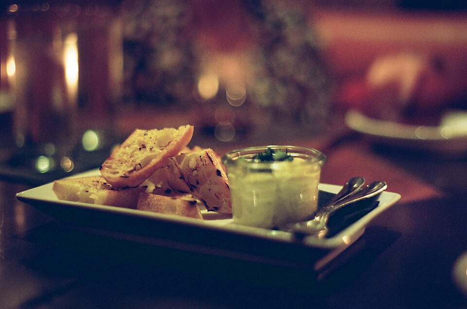
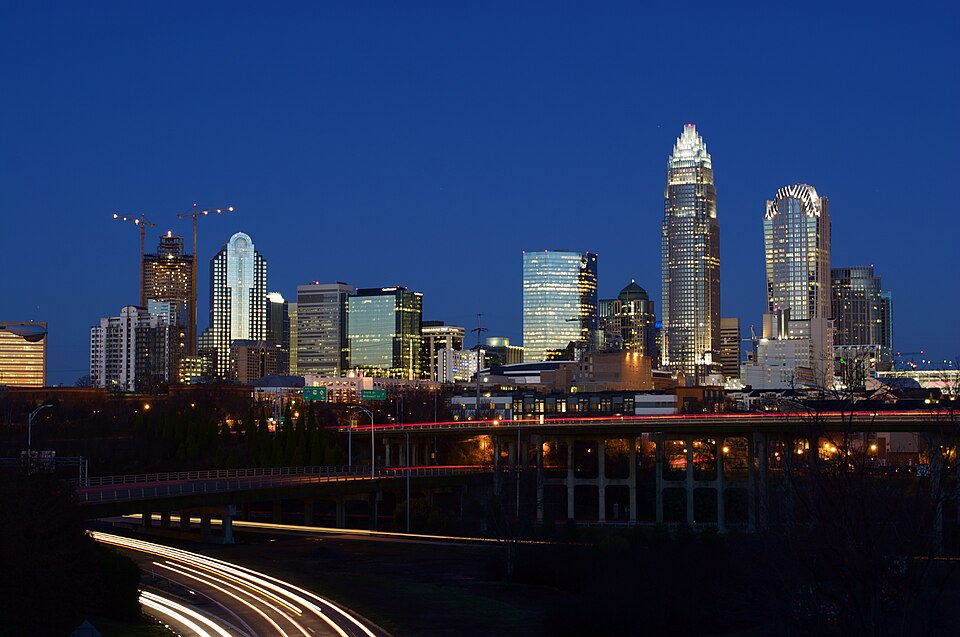
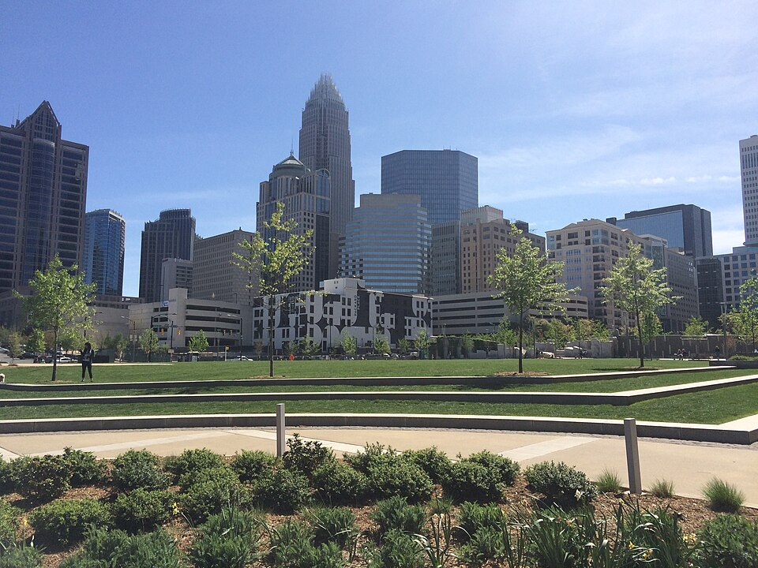
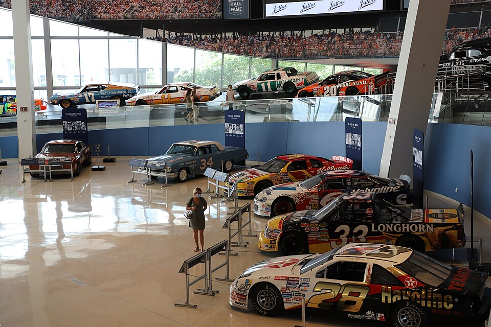
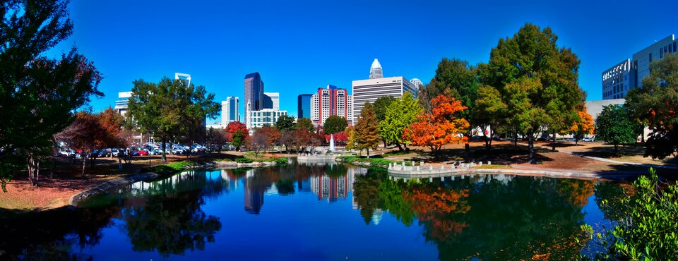
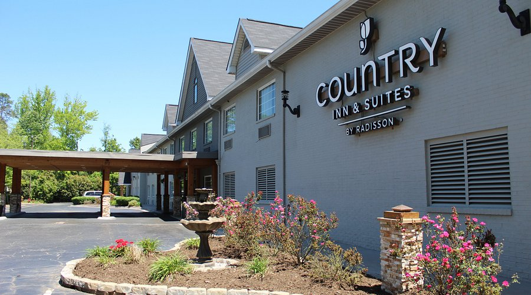

Explore Charlotte
Charlotte has a variety of places to eat, explore, and stay during your trip. Whether you're looking for local food spots, fun attractions, or a place to relax with friends, there are options for different interests and budgets.
Food & Restaurants

Try Local Food Spots
Explore Charlotte's restaurants, cafes, and food spots to find something new to try with friends.
$ Budget-Friendly
- Midnight Diner - Classic diner food and late-night meals.
- 7th Street Public Market - Different food vendors in one location.
$$ Mid-Range
- Rooster's Wood-Fired Kitchen - Wood-fired American food.
- Mert's Heart and Soul - Southern and soul food.
$$$ Higher-End
- Church and Union - Modern American dining in Uptown.
- Angeline's - Italian-inspired dining.
Things to Do in Charlotte

Explore Uptown
Uptown Charlotte has attractions, museums, restaurants, and places to walk around while discovering the city.
Free Activities

- Visit Romare Bearden Park.
- Explore local parks.
- Walk around Uptown and discover public art.
$$ Paid Attractions

- Discovery Place Science - Interactive exhibits and science activities.
- NASCAR Hall of Fame - Explore racing history and interactive exhibits.
Enjoy the Outdoors

Visit local parks and outdoor spaces to relax, take pictures, or spend time with friends without spending much money.
Where to Stay
Find a place to stay that fits your group's budget, whether you prefer a hotel or a vacation rental.
Hotels
$ Budget-Conscious

Country Inn and Suites - Hotel near Charlotte Douglas International Airport, NC.

Airbnb & Vacation Rentals
Vacation rentals can give groups more shared space to hang out, cook meals, and spend time together.
Browse Charlotte Airbnb stays to compare apartments, homes, and private rooms.